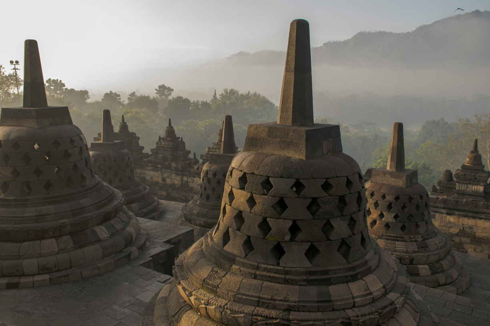

DISCOVER THE SACRED TEMPLES
Yogyakarta is home to some of the most extraordinary temples in the world, each a testament to the region's rich spiritual and cultural history. Below are the temples you must visit when exploring Yogyakarta, offering a journey through time, art, and devotion
Borobudur – The World Largest Buddhist Temple
An iconic symbol of Indonesia, Borobudur is the largest Buddhist temple in the world. This UNESCO World Heritage site features thousands of intricate stone carvings and numerous Buddha statues, all set within a stunning, multi-tiered structure that invites you to explore its spiritual significance and panoramic views.
Prambanan - The Sacred Spires of Yogyakarta
Dedicated to the Hindu Trimurti, Prambanan Temple is a masterpiece of ancient architecture. Its towering spires and detailed stone carvings tell the tales of Ramayana, making it a must-visit site for those interested in Hindu mythology and history.
Sewu Temple - The Thousand Temples Complex
Located just a stone's throw from Prambanan, Sewu Temple is the second-largest Buddhist temple complex in Java. Despite its name, which means 'a thousand temples,' the complex consists of 249 structures, all showcasing the grandeur and spiritual significance of Buddhist architecture.
Plaosan - The Twin Temples
Known for its harmonious blend of Buddhist and Hindu elements, Plaosan Temple is an architectural wonder. The twin temples are adorned with detailed carvings and surrounded by lush green fields, making it a peaceful retreat and a testament to the cultural fusion of the era.”
Ijo Temple - A Hidden Gem on the Hill

Ijo Temple, nestled on a serene hilltop, is a lesser-known yet fascinating Hindu temple complex from the 10th century. Its intricate carvings and the peaceful ambiance of the site offer visitors a glimpse into the spiritual life of ancient Java. Explore the temple grounds, where history is etched into every stone.
Ratu Boko -
The Royal Palace Ruins
Unlike the traditional temples of Yogyakarta, Ratu Boko is an ancient palace complex that offers a blend of history and mystery. Situated on a plateau, this site provides a panoramic view of Prambanan and the surrounding areas, making it an ideal location for enjoying sunsets while exploring the remnants of royal grandeur.